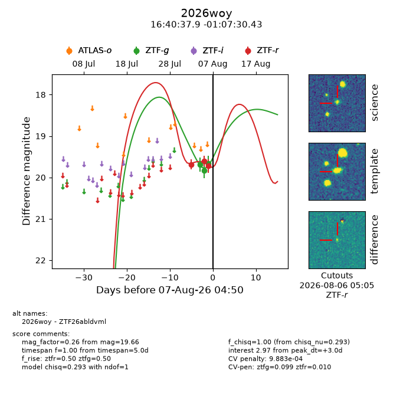
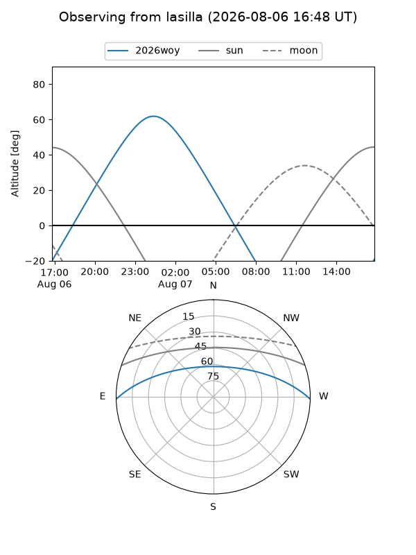
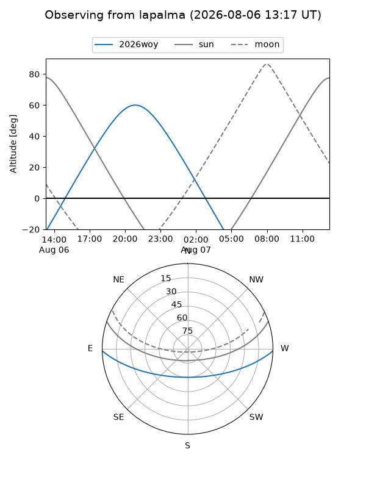
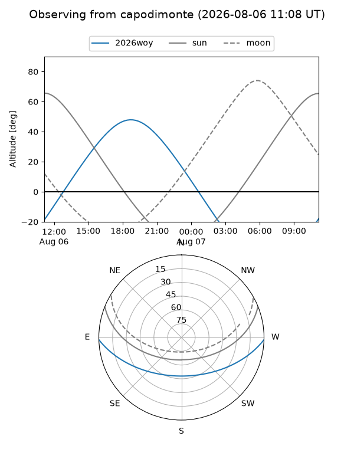
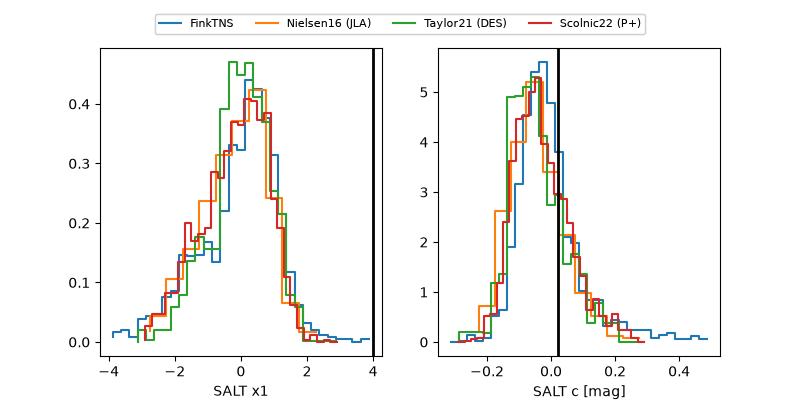

2026woy
Target 2026woy at 2026-08-07 04:53
Aliases and brokers:
FINK-ZTF: ztf.fink-portal.org/ZTF26abldvml
Lasair-ZTF: lasair-ztf.lsst.ac.uk/objects/ZTF26abldvml
ALeRCE-ZTF: alerce.online/object/ZTF26abldvml
YSE-PZ: ziggy.ucolick.org/yse/transient_detail/2026woy
TNS name: wis-tns.org/object/2026woy
Direct TNS query: direct search
alt names
ZTF26abldvml (ztf,fink_ztf)
2026woy (tns,yse)
Coordinates:
equatorial (ra, dec) = 250.1578,-1.12512
equatorial (HMS+DMS) = 16:40:37.87,-01:07:30.43
galactic (l, b) = (15.5243,+28.15009)
Flags:
TNS type: nan
peak dt: +3.0
likely cv: !!
Photometry:
last ztfg=19.66, ztfr=19.72
3 ztfg, 3 ztfr detections
Lightcurve

Visibility



Additional plots
